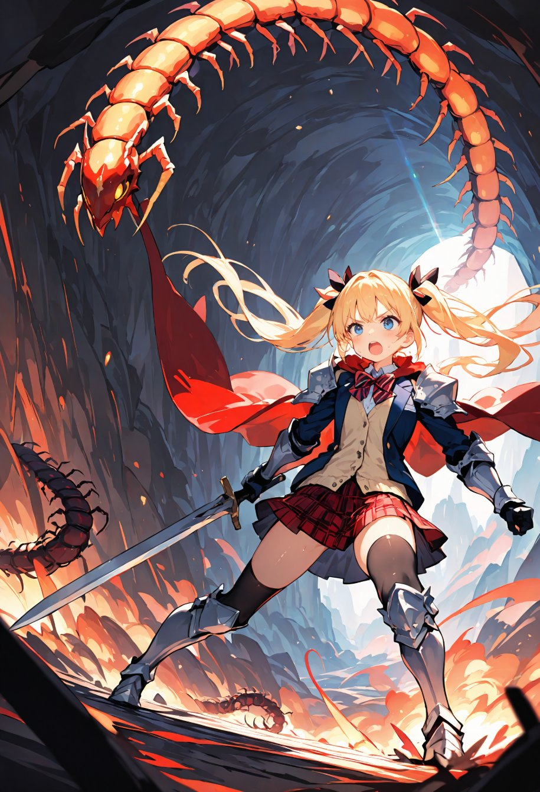
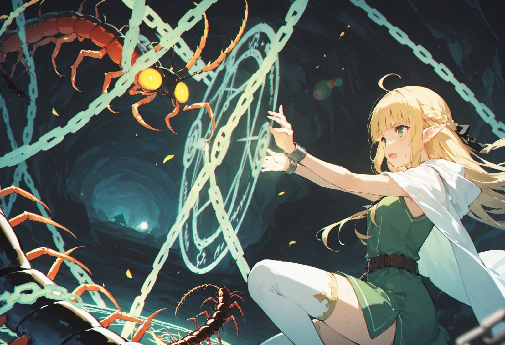
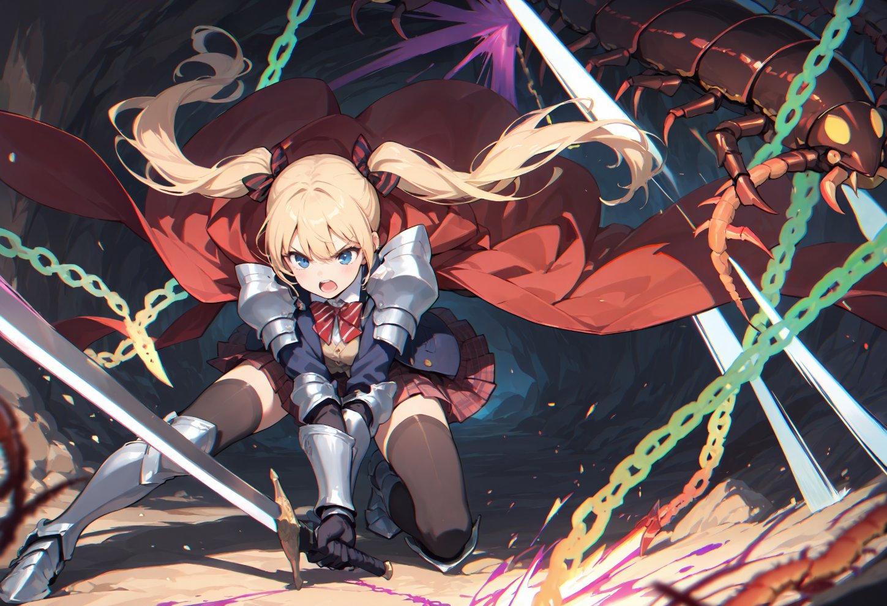

第12話
「この音……何かが近づいてる！」 美桜ちゃんが声を上げた瞬間、通路の奥から赤い光がいくつも揺らめきながら現れた。 まるで闇の中に潜む魔物の目のようだ。 湿った空気と獣のような生臭い匂いが漂い、リリアは思わず身を縮めた。
「リリアちゃん、下がって！ここは私に任せて！」 美桜ちゃんは鋭い視線を前方に向けながら腰の剣を引き抜き、迷いなく構えを取る。
通路の闇から現れたのは、無数の牙を持つ巨大なムカデのような魔物だった。 黒光りする外殻が鈍く光り、無数の足が石畳を叩く音が不気味に響く。 その異様な存在感に、リリアの膝が震えた。
「やっぱり出てきたか……！」 美桜ちゃんは緊張した表情を一瞬だけ見せたが、すぐにそれを振り払い、剣を構え直してじりじりと魔物との間合いを詰めていった。
「リリアちゃん、私が引きつけるから、隙を見て魔法でサポートして！」 「わ、わかった……！」 リリアは震える手で杖を握りしめ、必死に呪文を思い出そうとする。

巨大ムカデの魔物は美桜ちゃんの動きを捉えると、鋭い顎を大きく開けて勢いよく襲いかかってきた。
「甘いよ！」 美桜ちゃんは瞬時に横へ飛び、鋭く剣を振り抜く。 剣が魔物の硬い外殻に当たり、鋭い金属音が洞窟内に響いたが、刃はわずかに表面を傷つけただけだった。
「やっぱり硬いな……でも、ここなら！」
美桜ちゃんは瞬時に魔物の動きを読み、腹部の外殻が薄くなっている部分に狙いを定め、鋭い突きを繰り出す。 だが、魔物も負けじと反撃し、尾を振り回して美桜ちゃんを吹き飛ばそうとする。
「くっ！」 美桜ちゃんは剣を盾代わりにして尾の一撃を受け流し、数歩後退しながらもすぐに体勢を立て直した。

そのとき、リリアの震えた声が響く。 「ミオ、いまよ！」
リリアが必死に唱えた魔法が炸裂し、魔物の体に輝く鎖が絡みついた。 魔法の鎖がその巨大な体を拘束し、魔物の動きが一瞬止まる。
「ナイス、リリアちゃん！」
美桜ちゃんは力強く地面を蹴り、魔物の動けない隙を突いて跳躍。
「はぁああっ！」

全身の力を込めて剣を振り下ろすと、刃が魔物の急所を深々と貫いた。 魔物は凄まじい悲鳴を上げて暴れたが、次第に動きが鈍くなり、やがて崩れ落ちる。
美桜ちゃんは肩で息をしながら剣を鞘に収め、駆け寄った。 「やったね！リリアちゃんがいなかったら危なかったよ！」
リリアはほっとしたように微笑み、涙目になりながら額の汗を拭った。 「私も怖かったけど……ミオが頼もしかったから、私も頑張れたの……！」
洞窟の奥に差し込む微かな光が、戦いを乗り越えた二人の絆をそっと照らしていた。
― この話はここまで ―